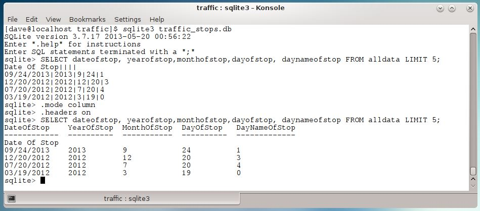

Here are a few additional items of interest that are worth noting but that didn't really fit into the flow of the story.
The default output style in sqlite3 works for some parsing, but it is not ideal for all purposes. When exploring data it may be helpful to change the output to columnar form and to add a header row.

SUM or COUNTCOUNT works well when field values are easily filtered.
On the other hand, if the values are encoded as 1 or 0 then using SUM can be better quick way to get an aggregate count over a field.
There are two benefits to using SUM like this. The SQL is more compact with SUM (there's no where clause) and rows are returned when the sum equals zero (COUNT doesn't return the output row).
Here's an example counting alcohol related citations issued to Male drivers.
sqlite> SELECT year, COUNT(Alcohol)
...> FROM alldata
...> WHERE (year > '1989') AND (year < '2001') AND gender = 'M' AND alcohol = 1
...> GROUP BY year;
Year COUNT(Alcohol)
---------- --------------
1992 31
1993 42
1994 44
1996 44
1997 48
1998 35
1999 43
2000 103
sqlite> SELECT year, SUM(Alcohol)
...> FROM alldata
...> WHERE (year > '1989') AND (year < '2001') AND gender = 'M'
...> GROUP BY year;
Year SUM(Alcohol)
---------- ------------
1990 0
1991 0
1992 31
1993 42
1994 44
1995 0
1996 44
1997 48
1998 35
1999 43
2000 103
sqlite>
Thanks for reading this far, I hope these notes prove useful!